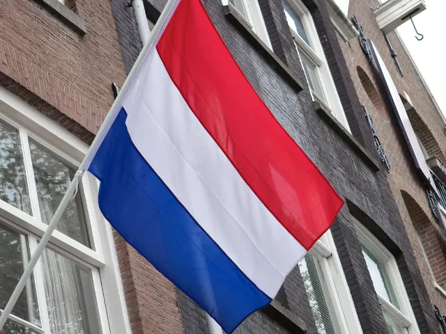

Partnerbijdrage
De evolutie van de Nederlandse vlag door de eeuwen heen
Gepubliceerd op 18 augustus 2025, bijgewerkt op 13 maart 2026

De Nederlandse vlag is een symbool dat iedereen in Nederland wel kent. Maar weet je ook hoe deze vlag is geëvolueerd door de eeuwen heen? Laten we samen een duik nemen in de geschiedenis van de rood-wit-blauwe driekleur en ontdekken hoe het is uitgegroeid tot het nationale symbool dat we vandaag kennen.
De oorsprong van de Nederlandse vlag
De Prinsenvlag
De geschiedenis van de Nederlandse vlag begint eigenlijk met de Prinsenvlag. Deze vlag bestond uit drie horizontale banen in oranje, wit en blauw. Het was de vlag van Willem van Oranje, die een belangrijke rol speelde in de Tachtigjarige Oorlog tegen Spanje. De kleuren oranje, wit en blauw werden gekozen omdat ze ook terugkwamen in het wapen van Willem van Oranje.
Van oranje naar rood
In de loop der tijd veranderde de kleur oranje naar rood. Er zijn verschillende theorieën over waarom dit gebeurde. Een populaire theorie is dat oranje pigmenten minder stabiel waren en sneller vervaagden dan rode pigmenten. Hierdoor zou rood een duurzamere keuze zijn geweest voor een vlag die vaak buiten hing. Tegen het einde van de 17e eeuw was rood definitief de bovenste baan geworden, wat resulteerde in de huidige rood-wit-blauwe vlag.
De officiële erkenning
19e eeuw: een nationaal symbool
Hoewel de rood-wit-blauwe vlag al veel eerder werd gebruikt, werd deze pas officieel erkend als nationale vlag in 1937 door koningin Wilhelmina. Dit gebeurde tijdens haar regeerperiode om duidelijkheid te scheppen over welke kleuren officieel bij Nederland hoorden. Sindsdien is er geen twijfel meer over: rood, wit en blauw zijn dé kleuren van Nederland.
Moderne gebruiken
Vandaag de dag zie je de Nederlandse vlag overal terugkomen, vooral tijdens nationale feestdagen zoals Koningsdag, Bevrijdingsdag en Dodenherdenking. Ook tijdens sportevenementen zoals het WK voetbal of Olympische Spelen wordt de vlag met trots gehesen. In Nijmegen bijvoorbeeld, zie je op deze dagen overal mensen hun huizen versieren met onze nationale driekleur.
Symboliek achter de kleuren
Rood, wit en blauw
Elke kleur op de Nederlandse vlag heeft zijn eigen betekenis. Rood staat voor het volk, wit symboliseert vrede en eerlijkheid, en blauw representeert loyaliteit en standvastigheid. Deze symboliek maakt de vlag niet alleen mooi om te zien, maar geeft ook een diepere betekenis aan wat het betekent om Nederlander te zijn.
Oranje boven!
Hoewel oranje niet meer op de vlag zelf staat, blijft het een belangrijke kleur voor Nederland. Tijdens Koningsdag kleurt heel Nederland oranje als eerbetoon aan het Huis van Oranje-Nassau. Dit laat zien hoe diepgeworteld deze kleur nog steeds is in onze cultuur en tradities.
Duurzaamheid in vlaggenproductie
Milieuvriendelijke materialen
In een tijd waarin duurzaamheid steeds belangrijker wordt, zie je ook dat fabrikanten zich inzetten voor milieuvriendelijke materialen bij het maken van vlaggen. Denk aan gerecyclede stoffen of biologisch afbreekbare materialen die net zo stevig zijn als traditionele stoffen maar minder belastend voor het milieu.
Lokale productie
Veel mensen kiezen tegenwoordig bewust voor lokaal geproduceerde producten om hun ecologische voetafdruk te verkleinen. Fabrikanten zoals Nederlandse Vlag spelen hierop in door hoogwaardige vlaggen te produceren die zowel duurzaam als lokaal gemaakt zijn.

Een tijdloos symbool
De evolutie van de Nederlandse vlag laat zien hoe dit eenvoudige stuk stof door de jaren heen zoveel meer is geworden dan alleen een herkenningsteken. Het vertegenwoordigt onze geschiedenis, onze waarden en onze trots als natie. Of je nu in Nijmegen woont of ergens anders in Nederland, elke keer dat je deze driekleur ziet wapperen, weet je dat je deel uitmaakt van iets groters.
Dus volgende keer als je jouw Nederlandse vlag hijst, denk dan even terug aan alle verhalen en betekenissen die schuilgaan achter die drie simpele kleuren. Het is meer dan alleen een vlag; het is een symbool van wie we zijn als Nederlanders!
Terug naar de beginpagina